/Tictactoe-blog-landing-page-3 (compressed).webp)
All possible combinations of plays in Tic Tac Toe
Did you know that you could display all possible combinations of plays in tic tac toe with just 179 boards?
I've created a map of plays that does exactly that.
Do you want to know how it was done?
In this article I will show you the map and explain how it was created. We will delve into all the strategies and concepts applied, while also exploring some cool patterns of the game.
Important contents
Symmetry of the board: rotations and reflections.
3 extra rules of play.
How to win in advance with double threats.
All games end at the 7th turn.
Winning sequences.
The 3 states of ties.
Get a free gift at the end of the article: File of the map with all the possible combinations of plays, in high resolution and with extra data.
Read article